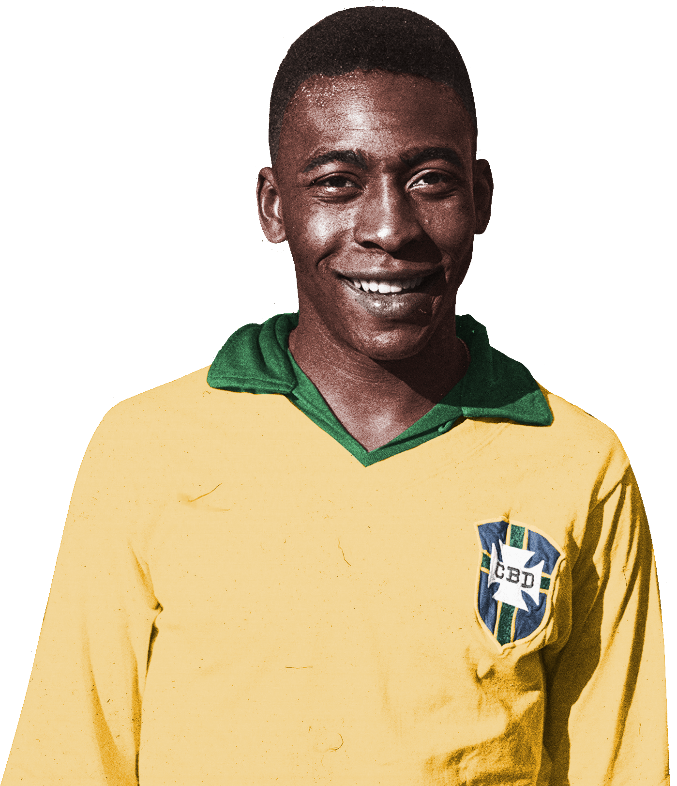

1940-2022
"Sucesso não é um acidente. É trabalho duro, perseverança, aprendizado, estudo, sacrifício e, acima de tudo, amor pelo que você está fazendo ou aprendendo a fazer."
Pelé (1940-2022) foi um jogador brasileiro de futebol. Conhecido como "Rei Pelé", encantou o mundo com seus dribles e passes. Foi nomeado Embaixador Mundial do Futebol. Foi eleito o "Atleta do Século". Levou o Santos Futebol Clube, onde atuou por mais de duas décadas, a ganhar mais de quarenta títulos. Pelé foi artilheiro do campeonato paulista, ganhou o título 11 vezes, onde 9 foram consecutivas. Foi artilheiro da Taça Brasil, da Taça Libertadores e do Torneio Rio São Paulo. Fez sua estreia na Seleção Brasileira com apenas 17 anos, incompletos, onde só se despediu em 1971. Jogou no New York Cosmos de 1975 a 1977. Foi Ministro dos Esportes entre os anos de 1995 e 1998.